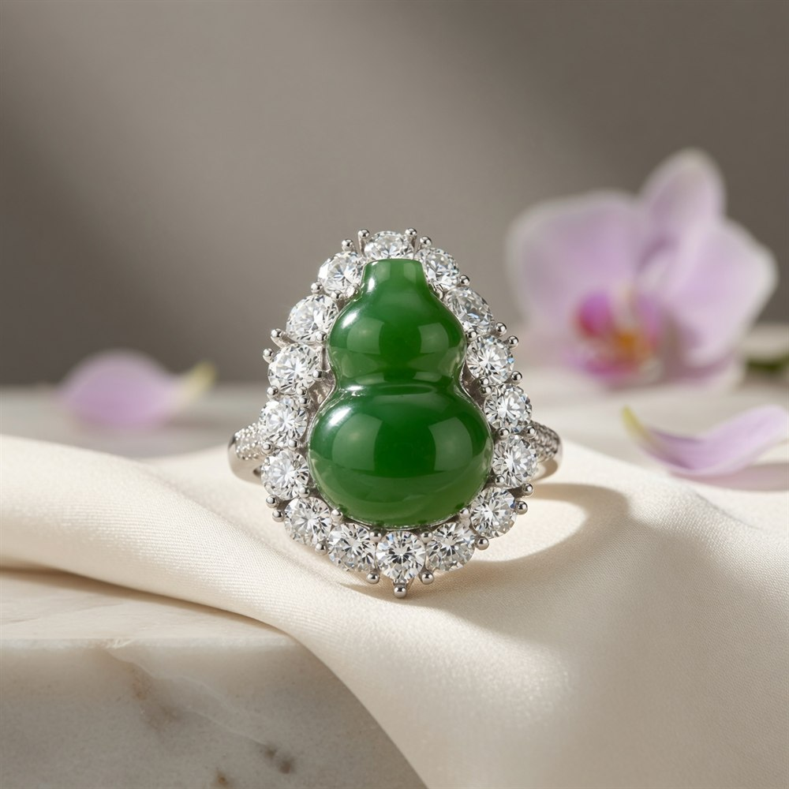
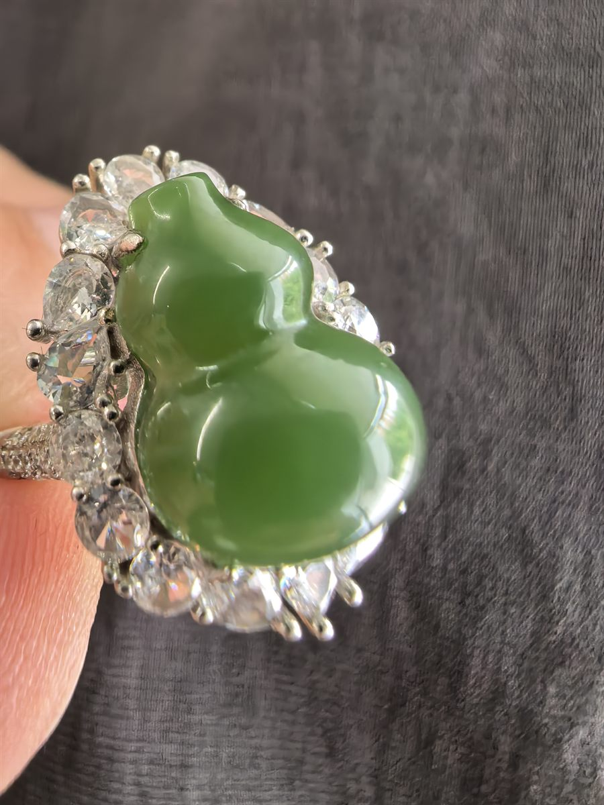
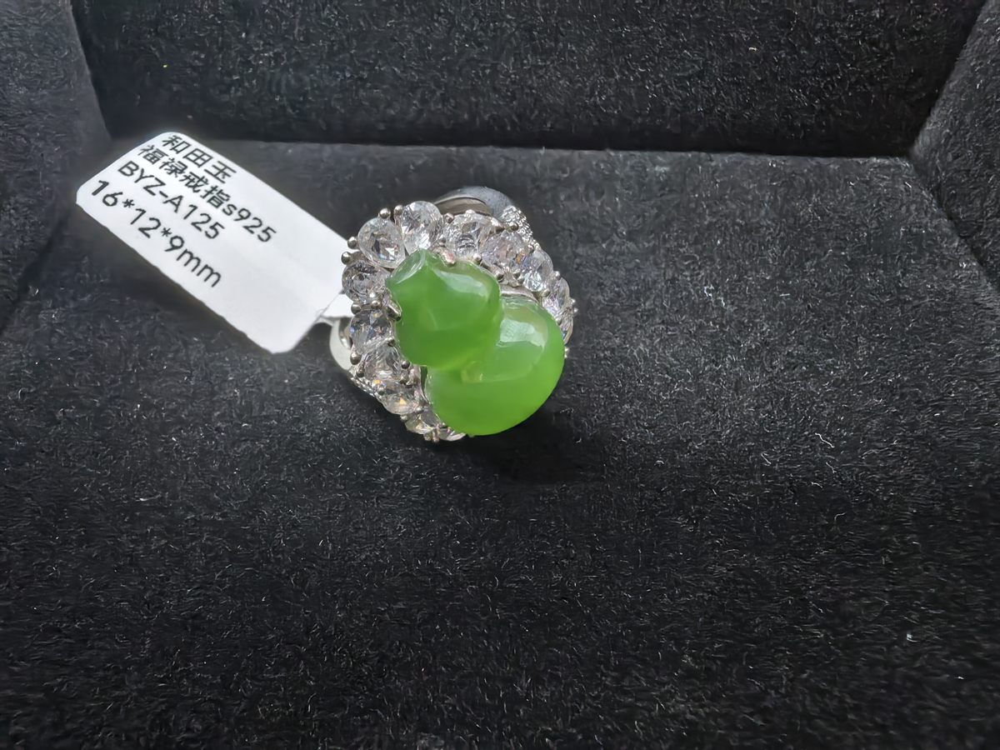
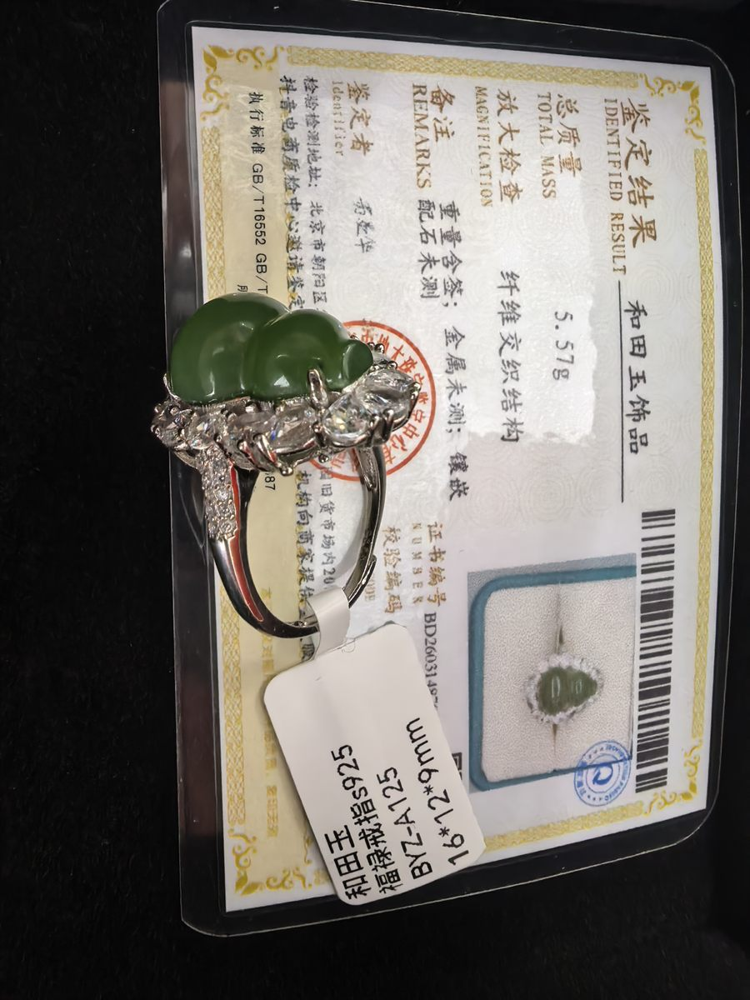

A plump double-gourd of spinach-green Hetian jade — emblem of fortune and prosperity — ringed by a sparkling zircon halo on a sterling-silver band. With certificate.
Every piece is hand-picked and traceable to its origin. Questions about size, weight or condition are welcome before you buy — we answer within a day.